Lo que estás sintiendo hoy
- No sabés por dónde empezar
- Sentís miedo por el futuro de tu hijo
- Todo parece confuso
- Te sentís sola o desbordada
- Dudás si estás haciendo lo correcto
Te acompaño a entender qué hacer, dejar de sentirte perdida y volver a sentir calma y seguridad para acompañar a tu hijo.
Querés hacer lo mejor para tu hijo... pero todo parece confuso y abrumador. Y lo más difícil... es sentir que tenés que resolver todo sola.
No es solo información... es una forma de dejar de sentirte perdida y empezar a tener claridad.
Sin sentirte abrumada.
Desde el primer día.
En cada paso del proceso.
A tu hijo con más seguridad.
Una guía emocional que no solo te informa... te acompaña. Un paso a la vez. Sin abrumarte.
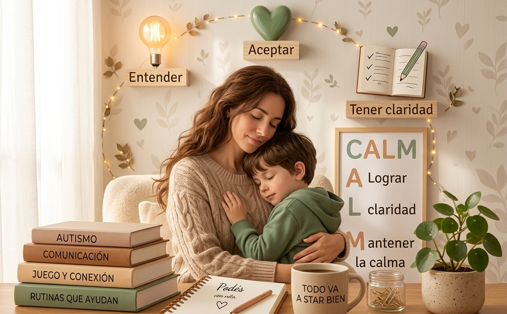
Entender lo que está pasando sin sentirte abrumada.
Acompañar tus emociones sin culpa ni presión.
Saber qué hacer y por dónde empezar.
Sentirte más segura para acompañar a tu hijo.
✓ Si sentís que el diagnóstico te dejó llena de dudas
✓ Si te preocupa no estar haciendo lo correcto
✓ Si hay días donde todo te supera
✓ Si querés acompañar a tu hijo con más seguridad
✓ Si necesitás orden en medio de tanta información
✓ Si querés volver a sentir tranquilidad
No estás sola. Y no tenés que resolver todo de golpe.
No es teoría ni información suelta. Es una guía clara para acompañarte en cada etapa sin sentirte abrumada.
Vas a poder comprender el diagnóstico de tu hijo sin sentirte perdida ni abrumada.
Te acompaño a procesar tus emociones para que dejen de desbordarte.
Vas a tener claridad sobre qué hacer y cómo ayudarlo con más seguridad.
 (3).jpg)
Resultados reales de mamás que ya pasaron por este proceso.
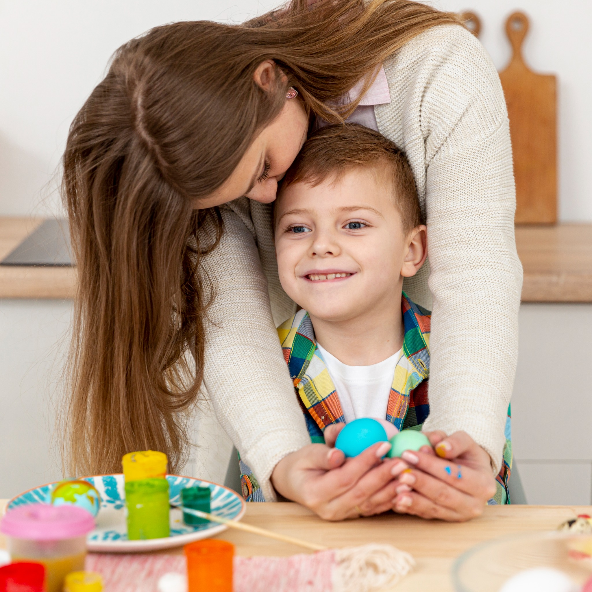
“Sentía que todo me superaba... no sabía por dónde empezar. Esta guía me dio claridad y hoy me siento mucho más tranquila.
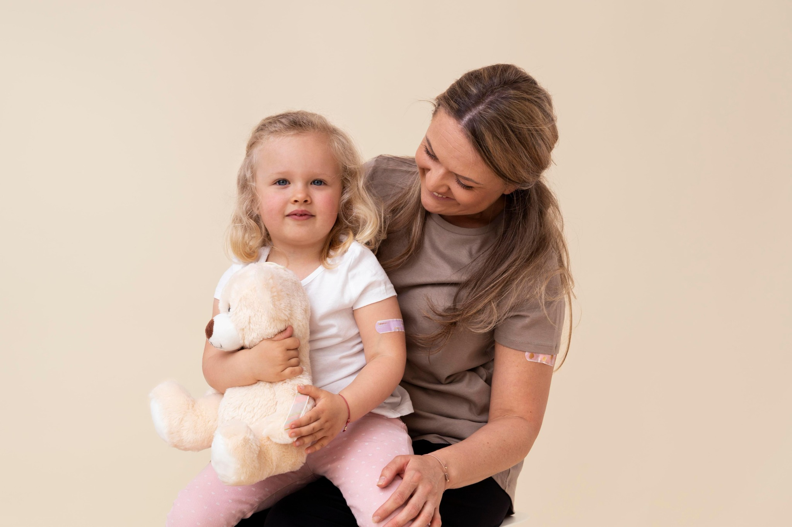
“Me ayudó a entender el diagnóstico sin sentirme perdida. Ahora sé qué hacer y cómo acompañar a mi hija con más seguridad.
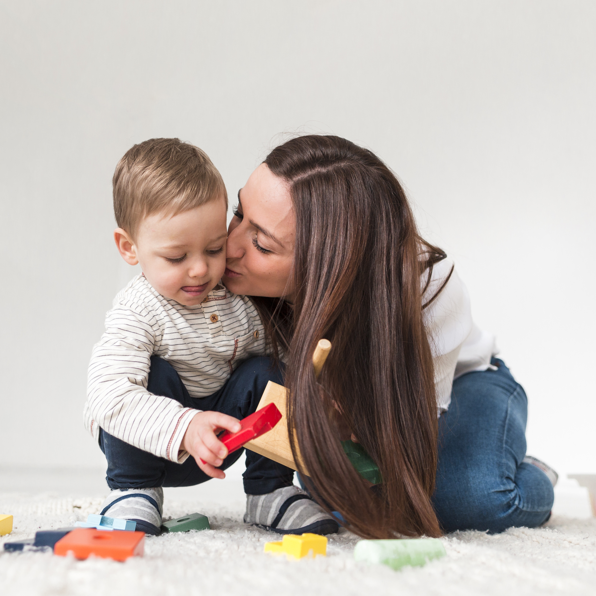
“Lo que más valoro es que no me sentí sola. Es como tener una guía que te acompaña paso a paso y te hace sentir acompañada.
Empezá hoy mismo, sin presión y a tu ritmo.
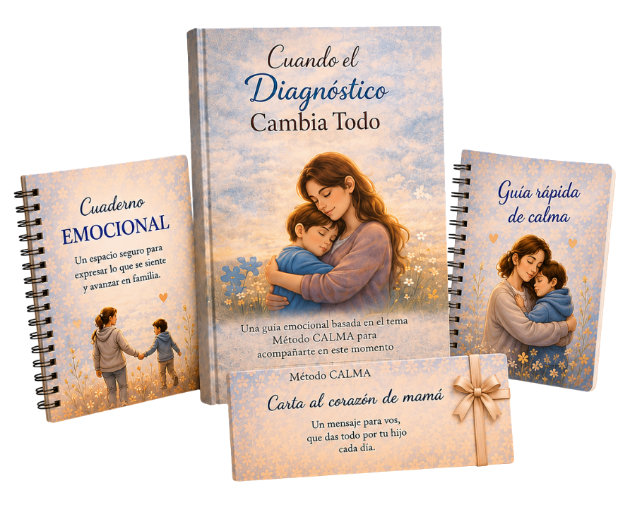
Paso a paso para entender el diagnóstico y acompañar a tu hijo sin sentirte perdida.
Para ordenar lo que sentís, descargar y volver a conectar con vos.
Herramientas simples para esos momentos difíciles del día a día.
Un mensaje que te abraza en este proceso y te recuerda que no estás sola.
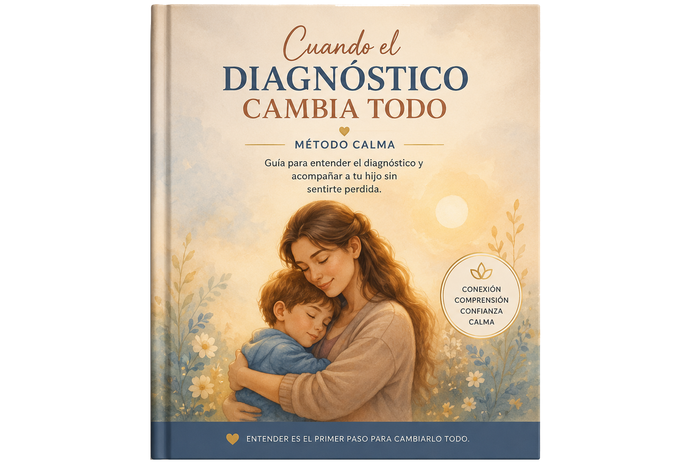
Paso a paso para entender el diagnóstico y acompañar a tu hijo sin sentirte perdida.
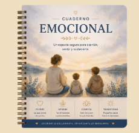
Un espacio para ordenar lo que sentís, descargar y volver a conectar con vos.
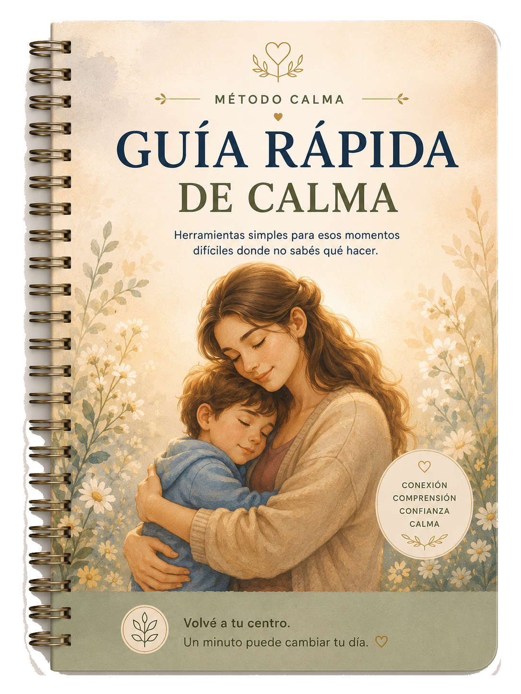
Herramientas simples para esos momentos difíciles donde no sabés qué hacer.
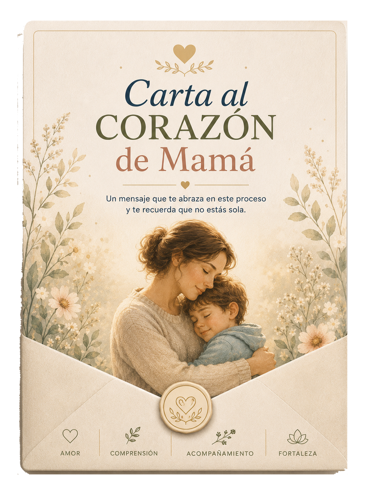
Un mensaje que te abraza en este proceso y te recuerda que no estás sola.
Pensados para acompañarte en los momentos más difíciles.
Para esos momentos donde sentís que todo te supera...
Vas a poder frenar, respirar y volver a vos en minutos.Una guía simple para saber qué hacer cada día sin sentirte perdida.
Pequeños pasos que te devuelven claridad y orden.Palabras que te sostienen cuando más lo necesitás.
Para recordarte que no estás sola y que lo estás haciendo bien.No es magia. Es una guía clara que te acompaña paso a paso en este momento tan importante.
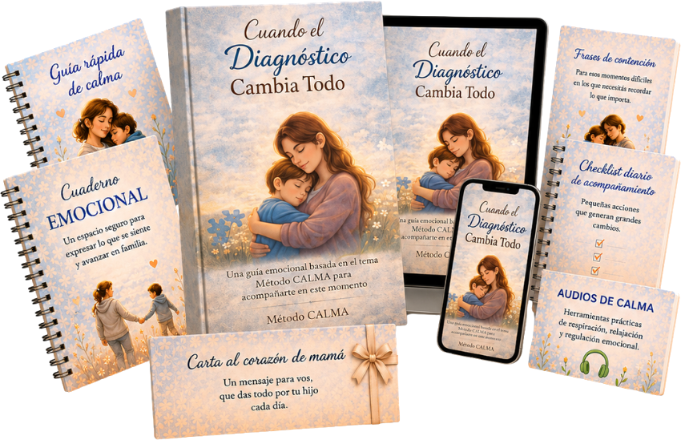
Por un valor único de
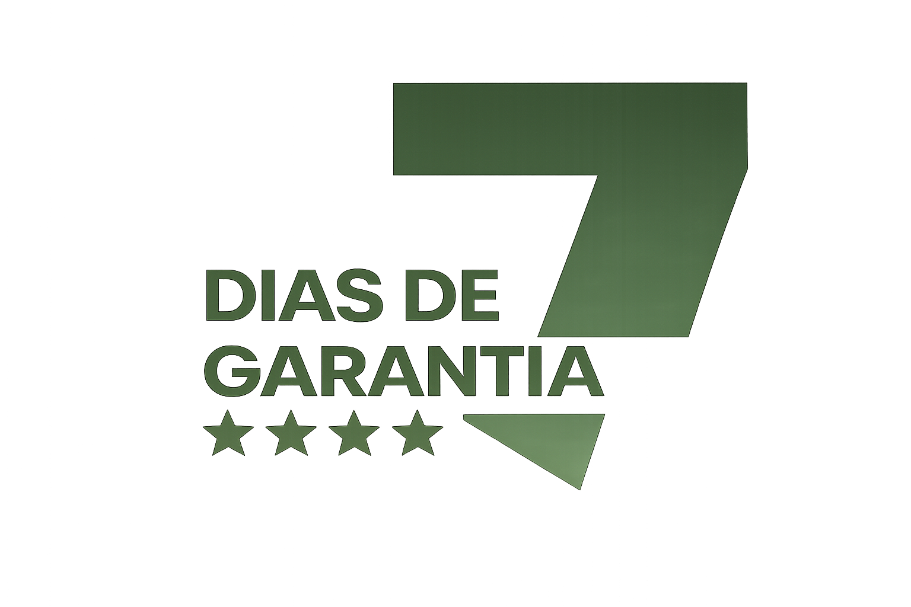
Probalo durante 7 días sin riesgo.
Si sentís que no es para vos, te devolvemos el dinero. Sin preguntas.
QUIERO PROBAR SIN RIESGO →Hola, soy Gabriela.
Creo contenidos pensados para acompañar procesos emocionales reales, desde un lugar humano, amoroso y consciente.
Mis materiales nacen de la sensibilidad y el deseo profundo de ayudar a otras personas a encontrar calma, claridad y alivio emocional en momentos difíciles.
Creo en el poder de las palabras, de la contención emocional y de las pequeñas prácticas cotidianas que pueden transformar cómo nos sentimos por dentro.
Cada recurso que comparto fue creado con intención, cuidado y respeto, para que puedas avanzar a tu ritmo y sentirte acompañada en el proceso.
Podés seguir sintiéndote confundida, con miedo y sin saber por dónde empezar... o podés elegir acompañarte de otra manera.
✓ Acceso inmediato · ✓ Funciona desde el celular · ✓ No necesitás experiencia
Tu tranquilidad también importa. 💛
Fue creado para mamás y familias que están atravesando el impacto emocional de recibir un diagnóstico y necesitan acompañamiento, claridad y calma.
Encontrarás herramientas emocionales, recursos prácticos y contenido pensado para acompañarte en esta nueva etapa.
No. Todo está explicado de manera simple, cálida y fácil de aplicar.
No. Es un complemento de apoyo emocional y acompañamiento para transitar el proceso con más calma.
El acceso al material es inmediato luego de completar la compra.
Es un producto 100 % digital para que puedas acceder desde cualquier lugar.
Este método fue pensado justamente para esos momentos. No estás sola en este proceso.
Sí. Podés acceder al contenido cuando quieras y avanzar a tu ritmo.
No. Está pensado para acompañar emocionalmente a familias atravesando distintos procesos y diagnósticos.
Su enfoque humano, emocional y real. No busca exigirte más, sino ayudarte a sentirte acompañada y comprendida.